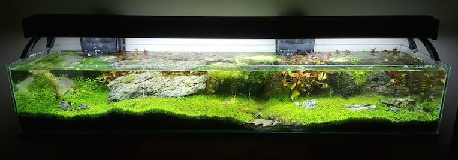
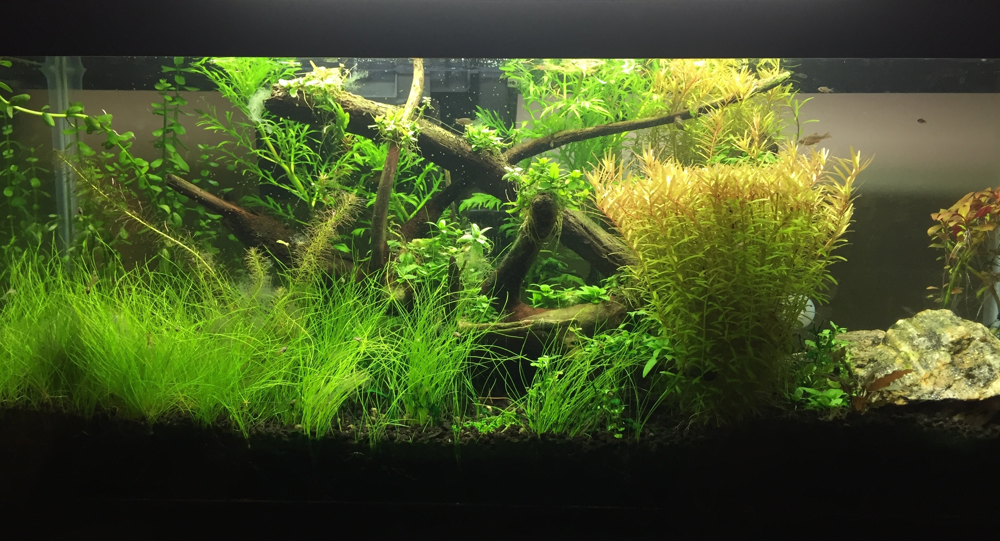
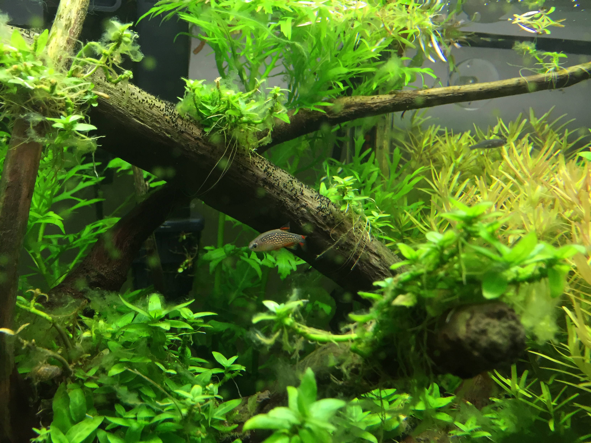
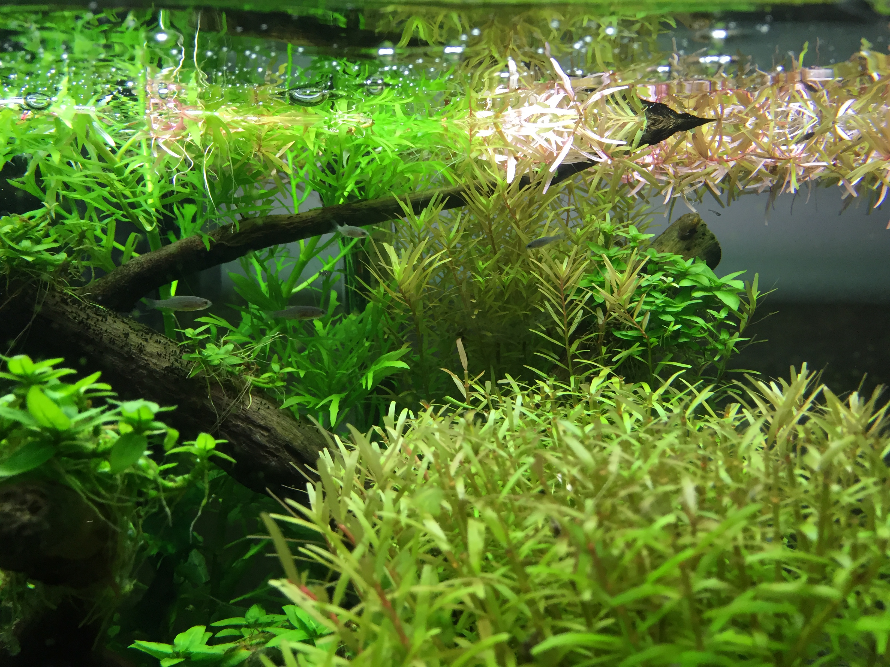

What is aquascaping?
Aquascaping is aquatic designing. It is an art form that mixes basic design principles with aquatic life. Aquascapes are planted aquariums. They are created in glass tanks and usually made of substrate, rocks or driftwood and a variety of live plants. These materials can be used to create simple or intricate designs in any size tank. Substrate, like dirt, is used to create a landscape in an aquascape. Decorations like rocks or driftwood are added to enhance an aquascape and create a focus point. Aquatic plants of any color, shape or size can be planted in a tank. Usually, aquascapes are created to show off their plants. With so much aquatic plant variety available, there are limitless plant combinations and designs one could use in an aquascape.
After successfully designing, creating and establishing an aquascape, many people introduce fish. Fish are secondary to plants. They add movement and color to already beautiful planted aquariums.

On this site...
On this site you will find the basic information and history you need to understand aquascaping. You will also find the basic steps for designing and creating an aquascape, the supplies you need to do so, examples of aquascapes and other useful information. This website is meant to be a resource for beginning aquascapers to learn more about aquatic design as well as a resource for people who already aquascape and simply want to know more.
  